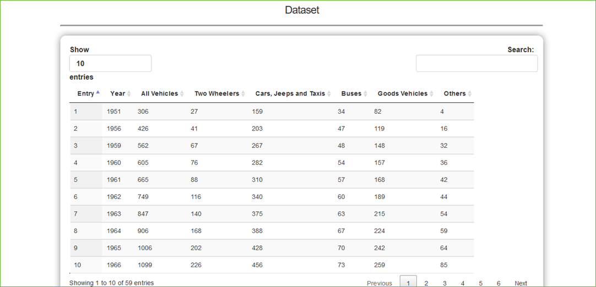
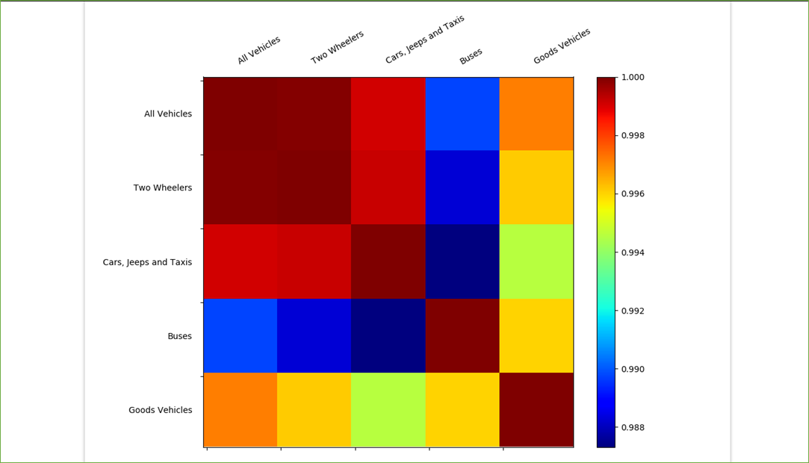

Open Government Data Analytics
DATASET SELECTION
The main webpage provides a search bar for selecting the desired dataset.
VIEW DATASET
The selected dataset is shown in tabular format. The user can search the table and view more entries.

DATASET VISUALIZATION
The selected dataset can be visualized in various ways as shown below.
COMPUTING CORRELATIONS
The user can select columns from the dataset for which correlations will be calculated.
Computed correlations are shown graphically.

PREDICTING FUTURE VALUES
The user can select
columns from the dataset for which predictions are to be made.
A Support Vector Regression based model is used for generating predictions.
The predicted values for selected columns are shown using dotted lines on a plot.
A table is also shown displaying the selected columns and predicted values.
USER QUERY HISTORY
The SAVE button at
the top of the webpage can be used to save the data selected by the user.
Using the LOAD button, the user can view query history and see the datasets
selected earlier.